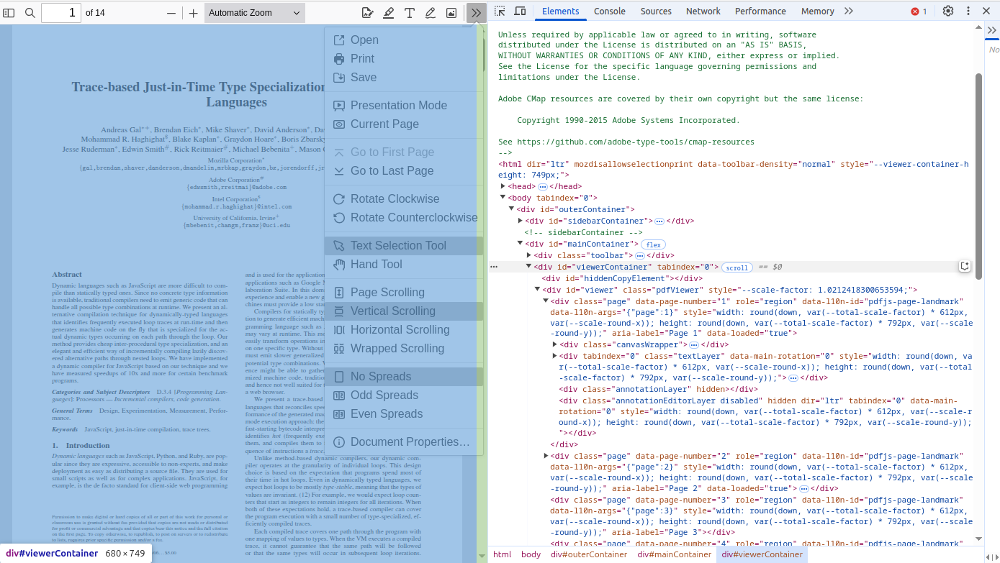

Hacking PDF.js
Source Code: PDF.js@github
Building Example/mobile-viewer
Look like all dependencies are installed by:
pdf.js/package.json.
Follow the examples/mobile-viewer/README.md:
gulp dist-install
gulp server
And can only works on local host’s browswer?
How the pan events are handled by web/viewer.js
Source folder: web/viewer.js.
Why? Since the question, Just need zoom and pan with viewer #17670 is not answered (23 Mar, 2025).
The Pan events handling can be found in the web/viewer.js example.
This should run the example, web/viewer.html:
npm i
Then start a web server in the project root folder.
{kind=link}
Insight
In web/viewer.html:
<head>
<script type="importmap">
{
"imports": {
"pdfjs/": "../src/",
"pdfjs-lib": "../src/pdf.js",
"web-pdf_cursor_tools": "./pdf_cursor_tools.js",
...
}
}
</script>
<script src="viewer.js" type="module"></script>
</head>
<body tabindex="0">
<div id="outerContainer">
<div id="toolbarContainer">...</div>
<div id="mainContainer">
<div id="viewerContainer" tabindex="0">
<div id="viewer" class="pdfViewer"></div>
</div>
</div>
<div id="dialogContainer">...</div>
</div>
</body>
The app implementation, PDFViewerApplication from app.js, is managed in viewer.js:
function getViewerConfiguration() {
return {
appContainer: document.body,
principalContainer: document.getElementById("mainContainer"),
// The container that GrabToPan transformmed.
mainContainer: document.getElementById("viewerContainer"),
viewerContainer: document.getElementById("viewer"),
...
};
}
function webViewerLoad() {
const config = getViewerConfiguration();
// ...
PDFViewerApplication.run(config);
}
document.addEventListener("DOMContentLoaded", webViewerLoad, true);
app.js:
const PDFViewerApplication = {
// ...
async run(config) {
await this.initialize(config); // bind events, load worker ...
// ...
}
// Called once when the document is loaded.
async initialize(appConfig) {
this.appConfig = appConfig;
await this._initializeViewerComponents();
//...
}
async _initializeViewerComponents() {
const { appConfig, externalServices, l10n, mlManager } = this;
const container = appConfig.mainContainer, ...
// ...
// NOTE: The cursor-tools are unlikely to be helpful/useful in GeckoView,
// in particular the `HandTool` which basically simulates touch scrolling.
if (appConfig.secondaryToolbar?.cursorHandToolButton) {
this.pdfCursorTools = new PDFCursorTools({
container,
eventBus,
cursorToolOnLoad: AppOptions.get("cursorToolOnLoad"),
});
}
}
}
pdf_cursor_tools.js:
class PDFCursorTools {
/**
* Called by switch toole event handling,
*
* disableActiveTool();
* this._handTool.activate();
* @private
*/
get _handTool() {
return shadow(
this,
"_handTool",
new GrabToPan({ element: this.container });
);
}
}
Pen events are handled in GrabToPan, where the moving target is the element parameter in constructor:
class GrabToPan {
mouseDownAC = null;
scrollAC = null;
constructor({ element }) {
this.element = element;
this.document = element.ownerDocument;
// This overlay will be inserted in the document when the mouse moves during
// a grab operation, to ensure that the cursor has the desired appearance.
const overlay = (this.overlay = document.createElement("div"));
overlay.className = "grab-to-pan-grabbing";
}
onMouseDown(event) {
this.scrollLeftStart = this.element.scrollLeft;
this.scrollTopStart = this.element.scrollTop;
this.clientXStart = event.clientX;
this.clientYStart = event.clientY;
this.mouseDownAC = new AbortController();
const boundEndPan = this.endPan.bind(this),
mouseOpts = { capture: true, signal: this.mouseDownAC.signal };
this.document.addEventListener(
"mousemove",
this.onMouseMove.bind(this),
mouseOpts
);
this.document.addEventListener("mouseup", boundEndPan, mouseOpts);
// When a scroll event occurs before a mousemove, assume that the user
// dragged a scrollbar (necessary for Opera Presto, Safari and IE)
// (not needed for Chrome/Firefox)
this.scrollAC = new AbortController();
this.element.addEventListener("scroll", boundEndPan, {
capture: true,
signal: this.scrollAC.signal,
});
stopEvent(event);
const focusedElement = document.activeElement;
if (focusedElement && !focusedElement.contains(event.target)) {
focusedElement.blur();
}
}
onMouseMove(event) {
this.scrollAC?.abort();
this.scrollAC = null;
if (!(event.buttons & 1)) {
// The left mouse button is released.
this.endPan();
return;
}
const xDiff = event.clientX - this.clientXStart;
const yDiff = event.clientY - this.clientYStart;
this.element.scrollTo({
top: this.scrollTopStart - yDiff,
left: this.scrollLeftStart - xDiff,
behavior: "instant",
});
if (!this.overlay.parentNode) {
document.body.append(this.overlay);
}
}
endPan() {
this.mouseDownAC?.abort();
this.mouseDownAC = null;
this.scrollAC?.abort();
this.scrollAC = null;
// Note: ChildNode.remove doesn't throw if the parentNode is undefined.
this.overlay.remove();
}
}
Not working on Android 10
Error:
Uncaught SyntaxtError: Unexpected Token '{' at line 18046 in pdf.mjs.
The lines here are:
class PDFWorker {
static fakeWorkerId = 0;
static isWorkerDisabled = false;
static workerPorts;
static { // line 18046
if (isNodeJS) {
this.isWorkerDisabled = true;
GlobalWorkerOptions.workerSrc ||= "./pdf.worker.mjs";
}
this._isSameOrigin = (baseUrl, otherUrl) => {
const base = URL.parse(baseUrl);
if (!base?.origin || base.origin === "null") {
return false;
}
// ...
}
Grok:
The static block (introduced in ECMAScript 2022) is used to initialize static
properties when the class is first evaluated. However, if the Android WebView
or the JavaScript environment doesn't support static blocks (e.g., due to an
older JavaScript engine) ...
This can be fixed by Grok:
// Define static properties and methods outside the class
const PDFWorkerStatics = {
fakeWorkerId: 0,
isWorkerDisabled: false,
workerPorts: undefined,
};
// Initialize static properties and methods
(function initializePDFWorkerStatics() {
if (typeof isNodeJS !== "undefined" && isNodeJS) { // Assuming isNodeJS is globally available
PDFWorkerStatics.isWorkerDisabled = true;
GlobalWorkerOptions.workerSrc ||= "./pdf.worker.mjs"; // Assuming GlobalWorkerOptions is global
}
PDFWorkerStatics._isSameOrigin = (baseUrl, otherUrl) => {
const base = URL.parse(baseUrl);
if (!base?.origin || base.origin === "null") {
return false;
}
const other = new URL(otherUrl, base);
return base.origin === other.origin;
};
PDFWorkerStatics._createCDNWrapper = url => {
const wrapper = `await import("${url}");`;
return URL.createObjectURL(new Blob([wrapper], {
type: "text/javascript"
}));
};
})();
class PDFWorker {
static fakeWorkerId = PDFWorkerStatics.fakeWorkerId;
static isWorkerDisabled = PDFWorkerStatics.isWorkerDisabled;
static workerPorts = PDFWorkerStatics.workerPorts;
static _isSameOrigin = PDFWorkerStatics._isSameOrigin;
static _createCDNWrapper = PDFWorkerStatics._createCDNWrapper;
constructor({
name = null,
port = null,
verbosity = getVerbosityLevel()
} = {}) {
// Constructor logic here
}
// Rest of the class implementation...
}
There is a similar issue in pdf.work.mjs. Fixed in f665e6fb.
Fonts not Rendered
The errors reported in browser console:
Warning: Error during font loading: Ensure that the `cMapUrl`
and `cMapPacked` API parameters are provided.
The similar troubleshooting helped resolving the font resources error:
script.onload = () => {
console.log('pdf.mjs loaded!');
let loadingTask: PDFDocumentLoadingTask = pdfjsLib.getDocument({
url: pdflink,
cMapUrl: 'https://cdn.jsdelivr.net/npm/pdfjs-dist@5.0.375/cmaps/'
}) as PDFDocumentLoadingTask;
// ...
}
See pdfjsLib.getDocument() API:
Methods
(inner) getDocument(src) → {PDFDocumentLoadingTask}
Parameters:
Name Type
src string | URL | TypedArray | ArrayBuffer | DocumentInitParameters
Type Definitions
DocumentInitParameters
Document initialization / loading parameters object.
Type: Object
Properties:
Name Type Attributes Description
url string | URL
cMapUrl string <optional>
...